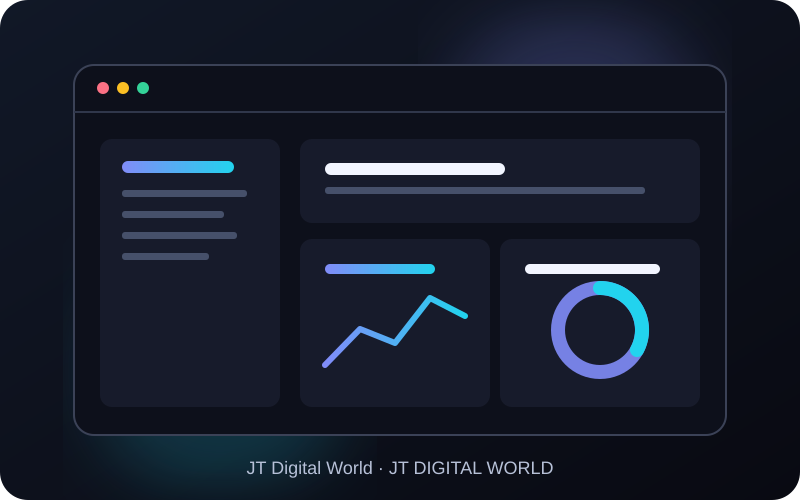

Your digital world.
Connected.
Powerful tools for creativity, productivity, development and AI — designed to work better together.
WORKSPACE
One world. All your tools.
Explore the JT ecosystem through real product interface previews, designed to work together across your digital workflow.
Explore all apps
Big ideas need
the right tools.
From your first spark to the finished project, find the right tool for the work — with a shared AI layer to help connect the dots.

Agent Jeff
Think through ideas, get help with tasks, and work across your digital world with an AI assistant.

JT Studio
Shape sound, organise sessions and bring your audio ideas together.

JT Design
Turn concepts into visual work with a focused creative workspace.

JT Code
Write, understand and improve code with practical AI-assisted workflows.
Good tools work well.
Connected tools work smarter.
JT is designed as an ecosystem. With clear permissions and app-specific capabilities, Jeff AI can help you move between tasks without losing sight of what you're trying to accomplish.
See how the platform fits together →Ready to make something
great?
Explore the tools, find your flow, and make JT part of your everyday work.